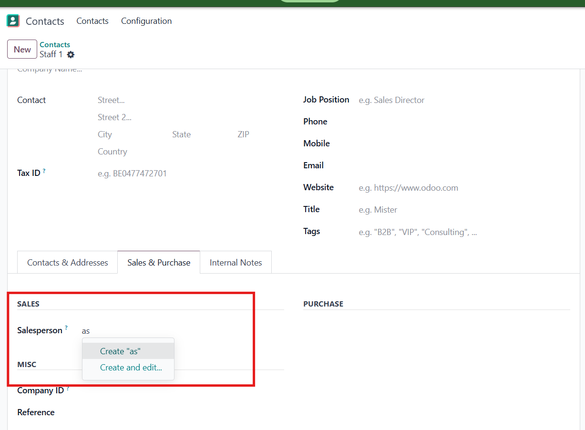
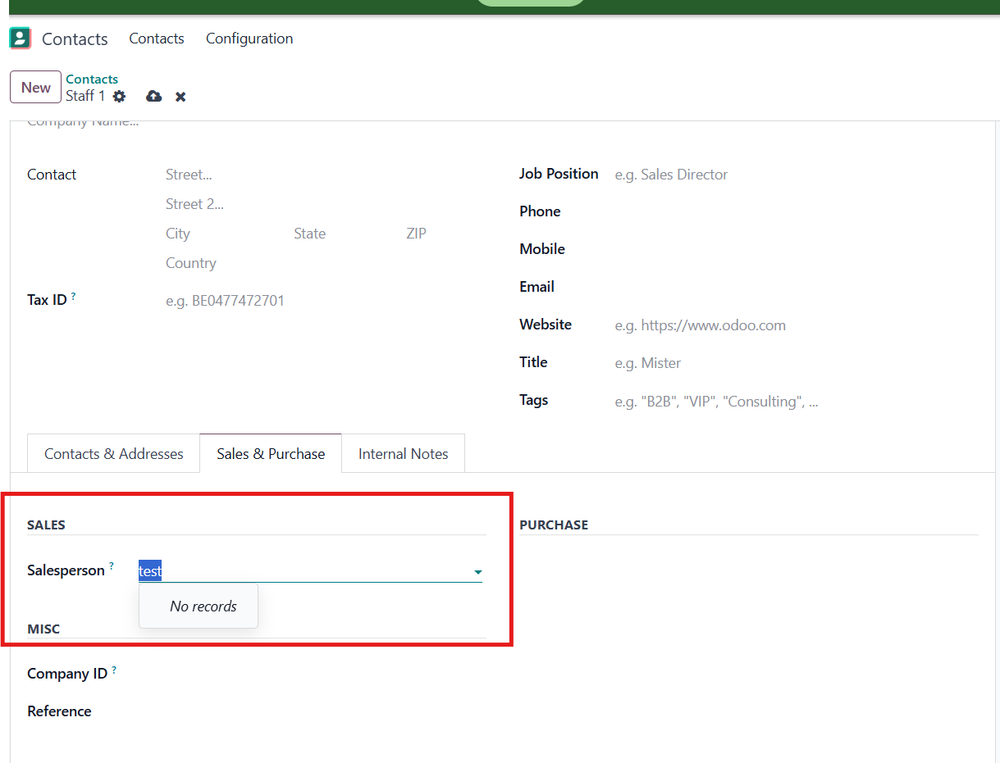

Web Hide Many2X Option
Hide "Create" and "Edit" in Many2One and Many2Many fields
This module improves usability by hiding the Create and Edit options
from Many2One and Many2Many dropdowns in Odoo.
Key Features
- Hide Create option
- Hide Edit option
- Works with both Many2One and Many2Many fields
- Simple and lightweight, no extra configuration required
Screenshots
Before:

After:
